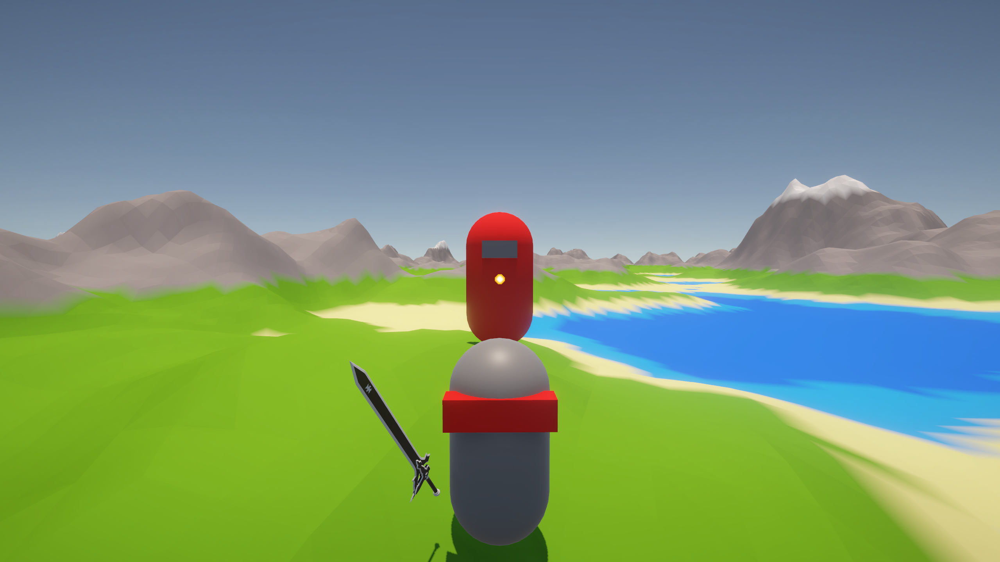

RE:Voxels
RE:Voxels is a voxel-based open-world RPG built with Unity, offering a dynamic and interactive sandbox experience. It features procedural terrain generation, allowing players to explore, and fight in a colorful low-poly world. Originally developed as a school project, RE:Voxels showcases practical programming skills and game design using C# and Unity tools.
Genre: Open-world RPG
Platform: PC
Engine: Unity3D
RE:Voxels Github
Code example
In this code I generate terrain using fractal noise. For each grid point, a height value is calculated and shaped using bias and power to control the terrain's steepness.
Each point becomes a vertex in 3D space, and after all points are placed, the heights are normalized and colored using a gradient. This gives the terrain natural-looking elevation and smooth color transitions.
It’s used in RE:Voxels to create colorful, procedural terrain chunks.
The main menu allows you to enter a custom seed for world generation, giving you the option to explore a familiar landscape or leave it blank to let the game surprise you with a new, procedurally-generated map each time you play.
In this in-game moment, the player is being chased by the formidable boss—defeating it is essential to progress and proves your skill within the dynamic and colorful voxel world.
Here's a quick look at some gameplay footage. This might change in the future.